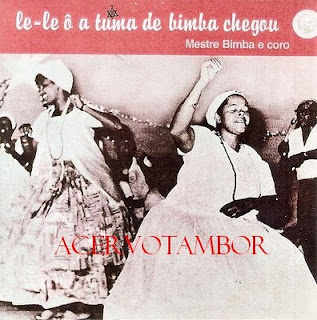

рутсовой самбы псот № 2.

пожалуй, один из самых драгоценных сборников рутсовой самбы, который любовно передает неповторимую атмосферу народного песенного фолклора.
результат моего поиска выдал, что на него нет mp3 [и, cкорее всего, не будет, поскольку эта запись оцифрована какими-то старателями с винилового носителя]
я просил поискать эту пластинку или более внятную оцифровку у друзей, живущих сейчас в бразилии. однако результат пока что нулевой. по всей видимости, это действительно нехилый раритет даже для бразилов. я готов палец себе откусить за такой винил.
сборник частично выложен на youtube.
а вот некоторые треки
экзампл 1. песня про семьсот куриц, несущихся в поезде в сельской местности
eu tomei uma carreira
essa foi pequinininha
num vagão de sete arrobas
no rocado duma bainha
uma sexta de ovos
e setecentas galinhas
e o trem corre
e pra cima da linha
e o trem corre
e pra cima da linha
экзампл 2. всем известная "классическая" про русалок, которую можно услышать от разных исполнителей, начиная от бока рика с бигудинью, заканчивая контемпорскими поп денс-версиями. но вот здесь почему-то именно очень цепляет раскатистый голос старика бимбы под хор из "ста детей" да и вся эта простота с хлопками в ладоши.
п.с. и еще раз чрезвычайное спасибо дане скрыльникову и, в особенной особенности, свете пастуховой из салвадора.
ыку ыку ыку ыку ыку ыку ы.